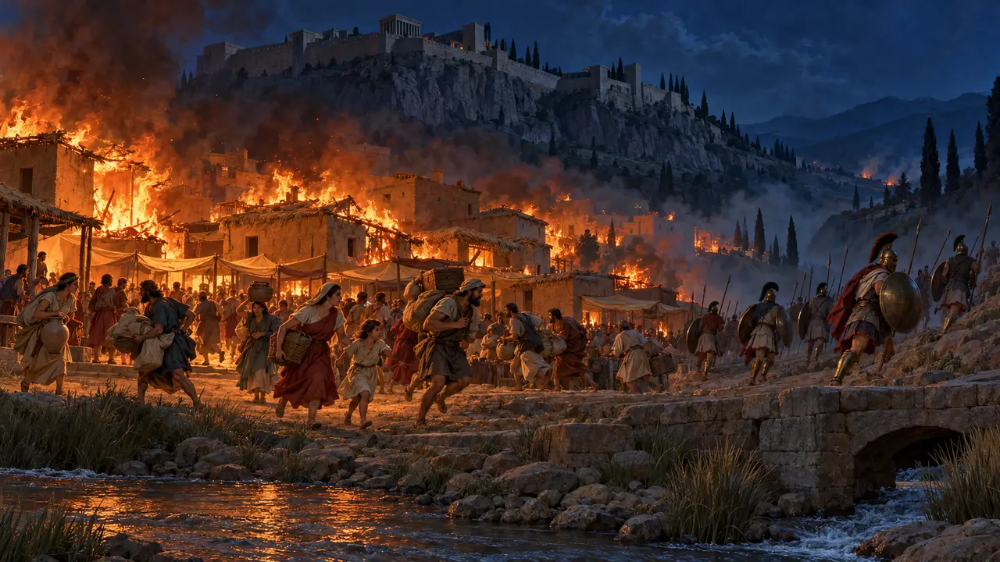
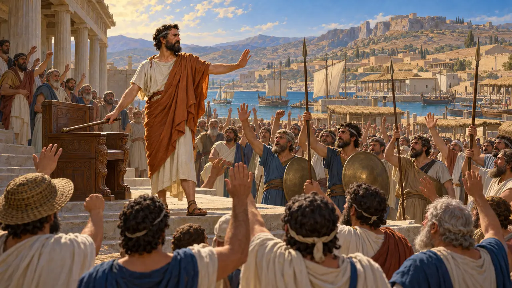
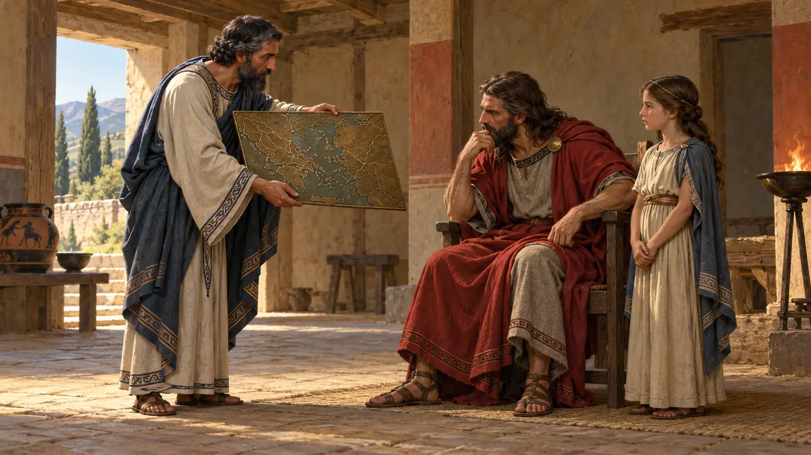
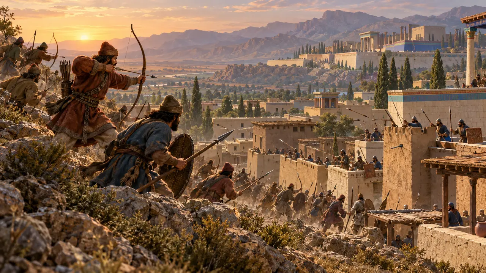
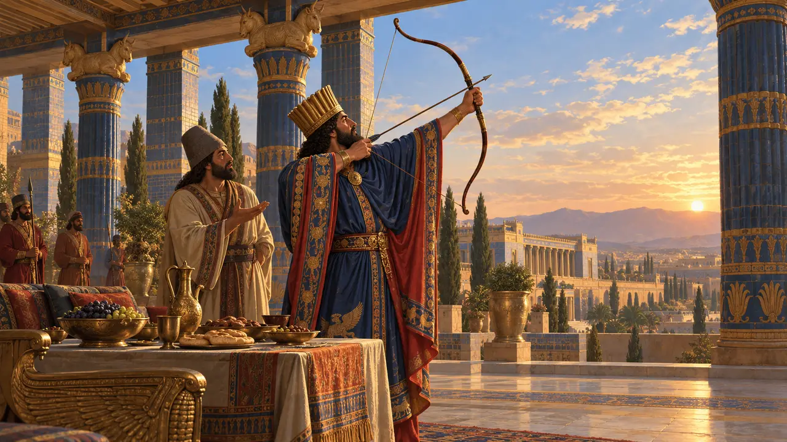
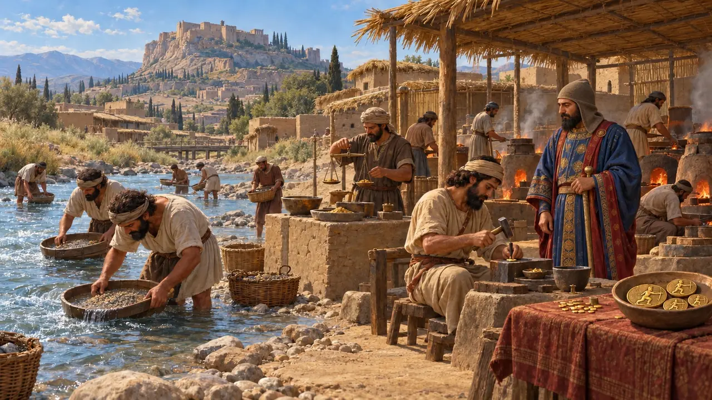
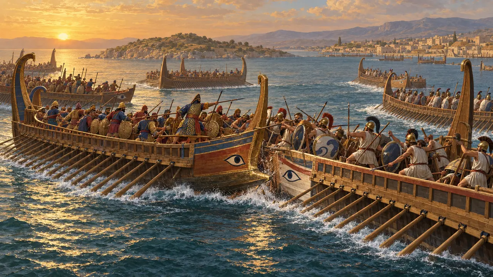
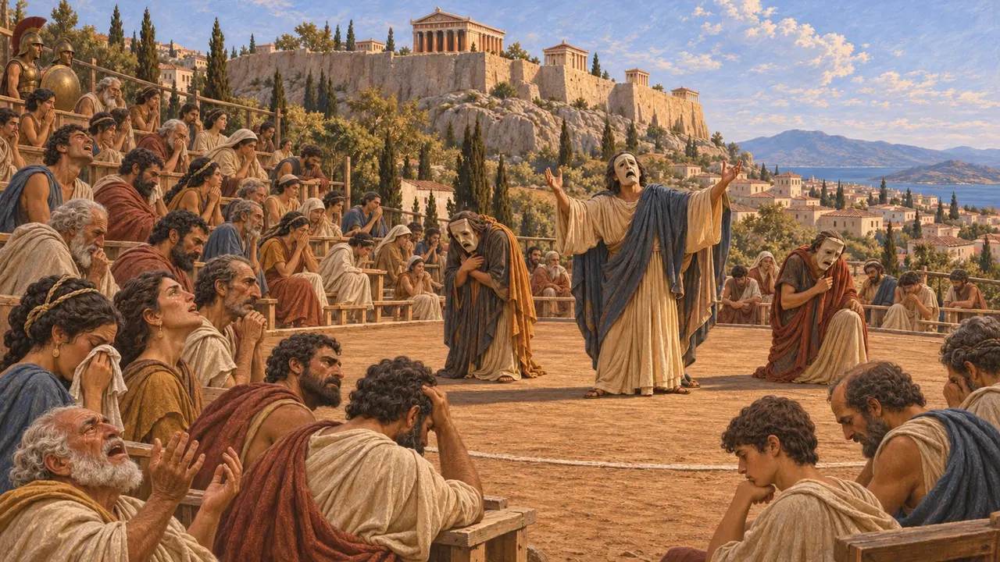
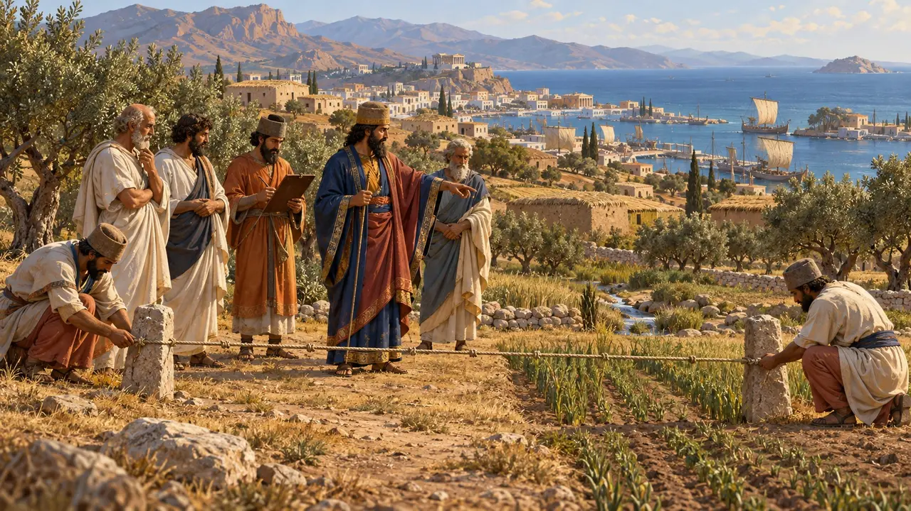

Level 7: Sardes brennt · Sardes · 499–494 v. Chr.
Sardes brennt
Sardes brennt, 498 v. Chr.: Die schilfgedeckte Unterstadt steht unterhalb der Zitadelle in Flammen.
Enzyklopädie › Die Geschichte
499 v. Chr. erhoben sich die griechischen Städte Ioniens gegen ihre Tyrannen und den König. Mit zwanzig athenischen und fünf eretrischen Schiffen zogen sie ins Landesinnere und brannten Sardes nieder. Sechs Jahre später zerschlug die Flotte des Königs sie bei Lade, und Milet fiel.

- 500 BCE Die Belagerung von Naxos scheitert
- 499 BCE Ionien erhebt sich
- 498 BCE Sardes brennt
- 497 BCE Zypern zurückerobert
- 494 v. Chr. Lade; Milet fällt
- 493 BCE Die Neuordnung des Artaphernes

Naxos
Antiker BerichtAristagoras von Milet überredete den Satrapen Artaphernes, eine Flotte gegen Naxos auszusenden. Der Befehlshaber geriet mit ihm in Streit und warnte die Naxier, und nach vier Monaten scheiterte die Belagerung. Vor dem Ruin stehend, wandte sich Aristagoras gegen den König.
Herodotus 5.30-35


Die eherne Karte
Antiker BerichtIn Sparta zeigte Aristagoras König Kleomenes eine eherne Karte der Welt. Kleomenes lehnte ab, als er erfuhr, dass Susa drei Monate vom Meer entfernt lag. Athen schickte zwanzig Schiffe; Herodot nennt sie „den Anfang der Übel“ für Griechen und Barbaren.
Herodotus 5.49-51, 5.97
Sardes brennt
Antiker BerichtDie meisten Häuser von Sardes waren aus Schilf oder hatten Schilfdächer. Eines fing Feuer, und die ganze Unterstadt brannte nieder, samt dem Tempel der Göttin Kybebe. Artaphernes hielt die Zitadelle. Später beriefen sich die Perser auf diesen Tempel, als sie griechische Tempel niederbrannten.
Im Spiel: Reed roofs: torches catch easily, and fire spreads fast. The town's sanctuary is the Temple of Cybebe, and it burns like the rest.
Herodotus 5.100-102

Ephesos
Antiker BerichtDie Ionier und Athener konnten die Zitadelle nicht einnehmen und zogen zurück zur Küste. Die Perser aus den Satrapien westlich des Halys holten sie bei Ephesos ein und schlugen sie; Eualkides, der Feldherr der Eretrier, fiel. Die Athener segelten heim und wollten den Ioniern nicht wieder helfen.
Im Spiel: Das ionische Heer mit seinen Athenern und Eretriern rückt von Ephesos heran.
Herodotus 5.102-103

„Gedenke der Athener“
Spätere LegendeHerodot berichtet, Dareios habe gefragt, wer die Athener seien, einen Pfeil in den Himmel geschossen und einen Diener bei jedem Mahl dreimal sagen lassen: „Herr, gedenke der Athener.“
Herodotus 5.105

Das Gold des Paktolos
Zeitgenössisch belegtDie Lyder, so Herodot, prägten als Erste Münzen aus Gold und Silber. Ausgräber fanden die Goldraffinerie von Sardes am Ufer des Paktolos. Unter den Persern wurden hier der goldene Dareikos und der silberne Siglos des Königs geprägt.
Im Spiel: Die Königliche Münzstätte verwandelt das Gold des Flusses in Silber für die Schatzkammer.
Herodotus 1.93-94; A. Ramage and P. Craddock, King Croesus' Gold (2000)

Lade, 494 v. Chr.
Antiker Bericht353 ionische Trieren trafen vor Milet auf die Flotte des Königs. Herodot zählt 600 v. Chr. auf Seiten des Königs. Die meisten Samier segelten vor dem Kampf davon; die Chier kämpften weiter und wurden vernichtet.
Im Spiel: In Akt II folgt die Flotte bei Lade.
Herodotus 6.6-17

Milet fällt
Antiker BerichtMilet wurde erstürmt, sein Tempel in Didyma niedergebrannt und seine Bewohner an den Persischen Golf umgesiedelt. In Athen brachte Phrynichos „Die Einnahme von Milet“ auf die Bühne; das Publikum weinte, und er wurde zu tausend Drachmen Strafe verurteilt, weil er es daran erinnert hatte.
Herodotus 6.18-21

Der Frieden des Artaphernes
Antiker BerichtDanach ließ Artaphernes das Land der Ionier vermessen, setzte ihren Tribut fest und verpflichtete die Städte, Streitigkeiten vor Gericht statt durch Krieg beizulegen. 492 v. Chr. setzte Mardonios die Tyrannen ab und ließ die Städte sich als Demokratien selbst regieren.
Herodotus 6.42-43
Read next: the topics of Sardes brennt
Schlachten und Ereignisse
Die Prägung des Dareikos · Die Belagerung von Naxos · Der Ionische Aufstand · Der Brand von Sardes · Der Aufstand auf Zypern · Die Schlacht von Lade · Der Fall Milets
Gebäude
Werkstatt des Salbenmachers · Zitadelle von Sardes · Goldraffinerie am Paktolos · Königliche Münzstätte · Phönizische Werft
Soldaten und Schiffe
Phönizischer Seesoldat · Griechische Hopliten · Aufgebote der unterworfenen Völker
Bevölkerung
Dareios der Große · Histiaios von Milet · Aristagoras von Milet · Kleomenes · Artaphernes · Mardonios · Melanthios
Völker
Die Perser · Die Elamer · Die Lyder · Die Ionier · Die Phönizier · Die Athener · Die Eretrier · Die Samier · Die Chier · Die Lesbier · Die Myser
Tierwelt und Wetter
Hirsche · Das Wildschwein · Der Weißstorch · Der Hase · Der Fuchs · Wildenten · Der Reiher · Der Milan · Die Felsentaube · Die Dohle · Der Kranich · Die Schwalbe · Fledermäuse · Der Steinkauz · Die Nebelkrähe · Morgennebel